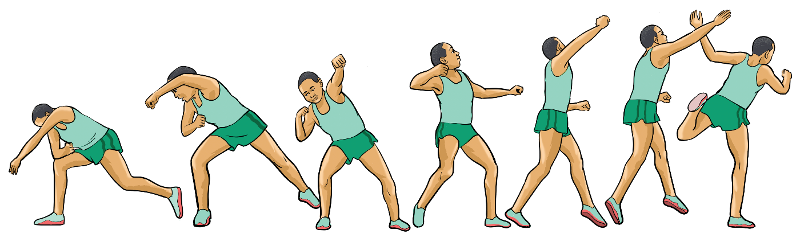

Rotational technique
The rotational technique (also called spin) is a method of putting a shot where the athlete spins inside the circle to generate more speed and power, allowing for a longer throw. The following are the steps for putting the shot by rotational technique.
(i)
Stand facing the back of the circle with feet shoulder-width apart, knees slightly bent, and the shot placed against the neck with proper hand positioning;
(ii)
Initiate a spinning motion by turning on the ball of the non-throwing foot, rotating the body across the circle;
(iii)
Land at the front of the circle with hips and shoulders squared generating force for the push by the rear leg;
(iv)
Thrust the shot forward with an upward angle using full body rotation to increase distance; and
(v)
Quickly bring the rear leg forward to prevent fouling and remain inside the circle until the shot lands, Figure 2.12.

a
b
c
d
e
f
g
Basic rules and regulations for shot put
The following are some of the rules for shot put:
1.
The shot shall be put from the shoulder with one hand. At the time an athlete takes a stance in a circle to commence a put, the shot shall not touch the neck;
SPORTS STUDIES FORM TWO.indd 41
9/17/25 9:54 AM